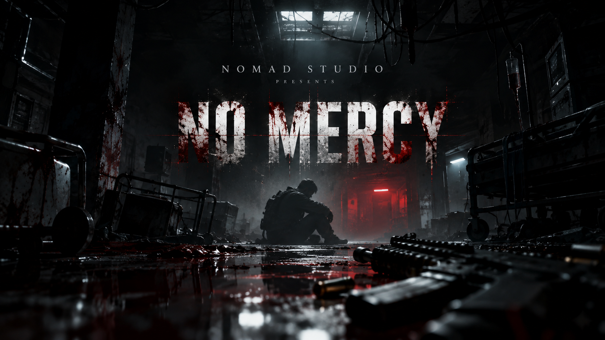
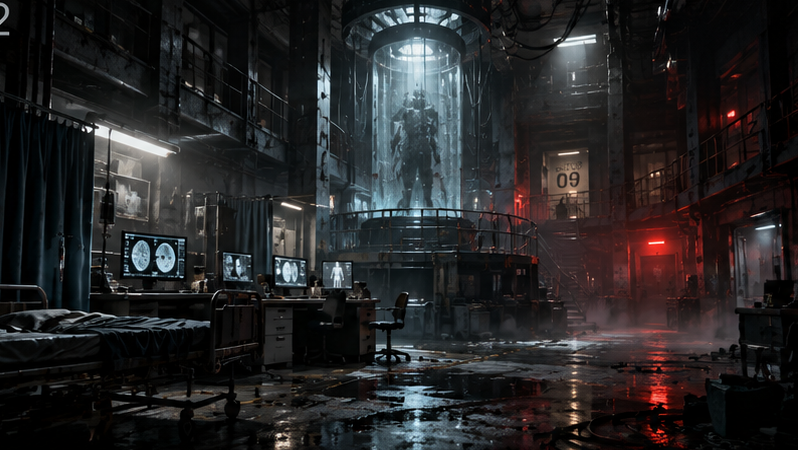
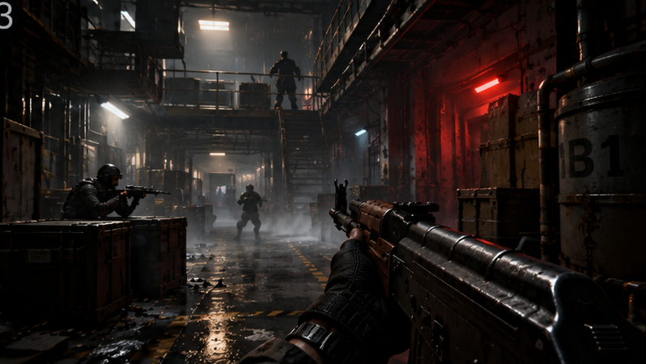
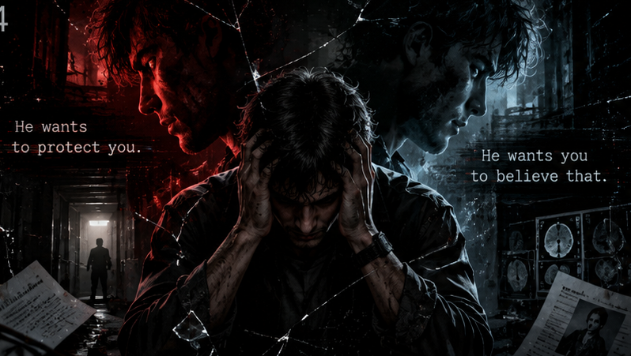
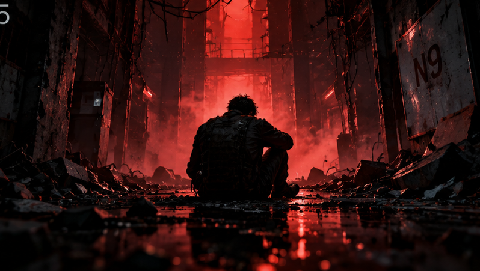

ENTER THE UNKNOWN
Explore a closed complex where every corridor holds a trace of what happened. Look closer. The details matter.

MEMORY IS A DANGEROUS PLACE.
THE NINTH ATTEMPT
“Some memories should never return.”
SOMETHING HERE REMEMBERS YOU.
You don't remember this place.
This place remembers you.
A sealed complex. A fractured memory. Two voices that cannot agree on what is real. NO MERCY is a psychological FPS horror about searching for answers when your own mind has become unfamiliar territory.
Follow the traces of a past you cannot recall. Question what you hear. Somewhere between the silence and the gunfire lies the truth about the ninth attempt.
LISTEN CLOSELY↗
Your weapon can keep you alive.
It cannot tell you what to believe.

Explore a closed complex where every corridor holds a trace of what happened. Look closer. The details matter.
Tense firefights break the silence. Keep your focus when instinct takes over and every shot carries weight.
Read abandoned documents. Piece together fragmented accounts. Face psychological events that unsettle your sense of reality.

03 / THE FRACTURE
Two voices. One mind.
Neither is willing to let go.
He wants to protect you.
LATEST UPDATES
Live devlog requires a local server. Run START.bat in the site folder, or open a news.json file below to read it here.
